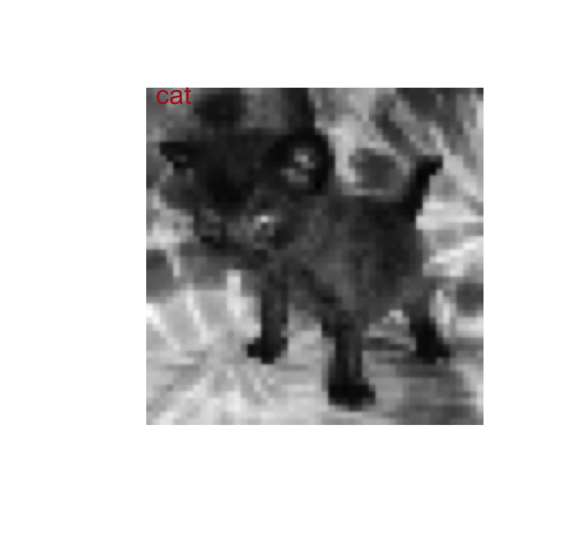

In this workshop will explore two commonly used multivariate methods for ordination and visualization: principal components analysis and simple correspondence analysis.
We will also explore a more advanced method, the convolutional neural network (CNN), for classification of images. The goal is not to perfect a CNN in this workshop, but to show you that this can be done in R and to give you a sense of how it works. It is essential that you learn about what a CNN is and gain some intuition for how it works before trying this exercise. I can recommend a couple of youtube videos for this: 3Blue1Brown and Brandon Rohrer. Watch them in advance of the workshop, maybe twice.
The Leaf Economics Spectrum (LES) is based on the idea that leaf lifespan and other leaf traits of plant species are correlated across a wide continuum of strategies for acquiring resources. The spectrum was first discovered and described using principal components analysis on a large data set of leaf traits amassed by Wright et al (2004, Nature 428: 821-827). The data set includes 2,548 species from 219 families and 175 sites, although there are many missing values for some leaf variables. A subset of the variables in their data set can be downloaded here. The file contains the following variables:
Download the data set and carry out the following analyses.
Read the data from the file and inspect the variables.
Use pairwise scatter plots to examine associations among the 6 continuous variables. Which variables are most strongly correlated with one another? Which traits are positively correlated with leaf lifespan (log10LL). Which traits are negatively correlated with leaf lifespan?
Carry out a principal components analysis on the six log-transformed continuous variables. Note that any case having at least one missing variable will not be included. How many cases were included in the analysis?
You can see from your pairwise scatter plot in (2) that the
variable logRdmass has the most sparse data. Redo the PCA
leaving this variable out. How many cases did you include this
time?
From (4) we can see that we still are missing a lot of cases, but let’s proceed with what we have. Examine the proportion of variance explained by each principal component. How may principal components are there? What proportion of the variance is accounted for by the first principal component? How many components are needed to capture 95% of the total variance among species*?
What are eigenvalues? Create a scree plot to visualize the magnitudes of the eigenvalues.
Create a biplot to visualize the contribution of traits to the first two principal components. For this analysis, PC1 is the “Leaf Economics Spectrum”. What continuum of leafs traits does it describe: what other traits do long-lived leaves possess, in general, in contrast to short-lived leaves?
What are eigenvectors? Compare the eigenvectors for the first two principal components with the previous biplot. Which variables contribute positively to the first two principal components? Which contribute negatively?
Save the scores for the first two principal components to your original data frame and plot them in a scatter plot.
(Optional) Plot the first two principal components and color the
points according to the variable Decid_Evergreen. Do you
see a pattern? You would already have predicted that deciduous leaves
would be short lived compared with evergreen leaves. A third color
indicates cases where the category is missing. Can you predict from this
graph whether they are likely to be mainly deciduous or
evergreen?
* 5 (There will be as many principal components as original variables in the analysis, except under special circumstances); 68.7%; 4
Correspondence analysis is used to ordinate species assemblages based on species composition and similarity in species abundances. The data for this exercise are rodent species abundance from 28 sites in California (Bolger et al. 1997, Response of rodents to habitat fragmentation in coastal Southern California, Ecological Applications 7: 552-563). The file in contingency table format is located here. I modified the data table downloaded from the web site of Quinn and Keough (2002, Experimental Design and Data Analysis for Biologists, Cambridge Univ. Press, Cambridge, UK).
The 9 species are indicated by variable (column) names. Genus abbreviations are: Rt (Rattus), Rs (Reithrodontomys), Mus (Mus), Pm (Peromyscus), Pg (Perognathus), N (Neotoma) and M (Microtus). Rattus and Mus are invasive species, whereas the others are native.
Download the file and read into a data frame in R. Inspect the data frame to get a sense of which species are abundant and which are rare, which are widely distributed and which occur infrequently. The first column of this data frame will have the site variable. Make sure not to include the site variable in the correspondence analysis. Also, the plots will use the row names of the data frame as the site names. If you want to see the actual site names rather than row numbers in your plots, rename the row names accordingly.
Carry out a correspondence analysis using these data. Extract two axes from the species abundance data at sites. How strongly are the site and species data correlated along the two axes?
Plot the results from (2). Overlap of points may make it difficult to identify some plots and species (unfortunately there’s no built-in “jitter” option for this plot). You can use the species scores to help identify them.
Use the plot in (3) and the species scores to interpret the results of your analysis. How are each of the species contributing to the correspondence axes? Do you notice any differences between the invasive and native species in their distributions?
As you probably surmised, the results of the first round of analysis were chiefly driven by the introduced species. To examine the native species as well, create a new data frame with Rattus and Mus deleted. This will generate some sites with no species present. Delete these sites from the new data frame.
Carry out a correspondence analysis on the native species. Extract two axes from the species abundance data at sites. How strongly are the species and site data correlated?
Plot the results from your analysis in (6). Is the plot useful in helping you to identify which species tend to co-occur? And which species tend not to occur together? Confirm this by looking at the original data. Are your interpretations correct?
Based on the plot in (7), which sites tend to have similar species composition and abundances? Which have different species assemblages? Confirm this by looking at the original data.
Based on the same plot, can you match the species to specific sites? Confirm this by looking at the original data. It would be easier to compare the plot of the correspondence analysis with the abundance data in the data frame if the rows and columns of the data frame were reordered according to the position of sites (rows) and species (columns) along the first axis from the correspondence analysis. Print the data frame with this reordering. The positions of the sites and species along the first axis are given in the first columns of the rscore and cscore matrices in your correspondence model object. Your results should look like the following:
N.lepida Pm.eremicus M.californicus Rs.megalotis Pm.californicus N.fuscipes Pg.fallax
Sandmark 8 65 3 9 57 16 2
Altalajolla 12 35 2 12 48 8 2
Katesess 0 21 0 11 63 16 0
Delmarmesa 0 1 0 0 10 1 0
Florida 0 1 0 1 3 2 0
Oakcrest 0 1 0 0 27 0 0
Spruce 0 0 0 0 1 0 0
34street 0 0 0 2 36 9 0
Edison 0 0 0 10 78 14 4
Tec2 0 0 0 10 29 9 1
Syracuse 0 0 0 4 39 12 0
Tec1 0 0 0 0 22 11 2
Balboaterr 0 1 3 5 53 30 18
Montanosa 0 0 0 2 0 8 2
Solanadrive 0 0 0 5 1 16 7With this ordering of the original abundance data, you can see how the different sites (rows) might lie along some environmental gradient. However, this is inferred only from the ordering of species abundances among the sites. No environmental variable has been included in this analysis.
In this exercise you’ll make a CNN to distinguish images of dogs from cats. This is not as easy as it sounds. The data are a subset of the Kaggle Dogs vs. Cats competition, and the dogs and cats are in different poses and on different backgrounds. For this exercise we’re using low-resolution grayscale images. I’ve downsampled the images to 50x50 pixel black and white images to keep the computations manageable for the workshop.
See the R tips AI page for hints on how to construct and run a CNN model. The R tips Data page has additional information on how to manipulate images in R.
See the R tips AI page for help with the two options: run in a
notebook in your browser at Kaggle.com (you’ll need to open a free
account) or run in R after installing the keras package on
your own computer. Setting up keras on your own computer
might be challenging, so unless you already have it working already we
prefer that you run this workshop on Kaggle.
library(keras) library(reticulate) library(tensorflow) library(imager)
For this workshop I’ve created a training data set of 10,000 images
named train_x, and a corresponding vector
train_y indicating whether each image is of a cat
(y = 0) or dog (y = 1). I’ve also made a
second, test data set of 2000 images named test_x, and a
corresponding vector test_y indicating whether the image is
of a cat (0) or dog (1). The purpose of the test data is to see how well
our trained CNN model performs.
The files are located on the Zoology server. The 10,000 cat and dog
images are stored in train_x, and the corresponding vector
train_y indicating whether each image is of a cat (0) or
dog (1). Test images are stored the same way but there are only 2,000
images.
The easiest way that works for all is to download the files to your
computer by clicking the following links:
train_x
train_y
test_x
test_y
If you are running on Kaggle, you first need to upload the data files to your notebook:
The data are stored in R internal format. Use the load()
command to load the data into your R session. The commands here assume
the files are in “myfolder” but use the actual name of your folder if
you used a different name.
# on Kaggle
load("/kaggle/input/myfolder/train_x.rdd")
load("/kaggle/input/myfolder/test_x.rdd")
load("/kaggle/input/myfolder/train_y.rdd")
load("/kaggle/input/myfolder/test_y.rdd")
# on own computer
load("/myfolder/train_x.rdd")
load("/myfolder/test_x.rdd")
load("/myfolder/train_y.rdd")
load("/myfolder/test_y.rdd")The grayscale images are stored in an array with three dimensions.
The second and third dimensions are the height and width of each image
(50 x 50 pixels), and the first dimension is the number of images. The
images were originally stored as integers between 0 and 255 but I have
rescaled them to lie between 0 and 1. Enter train_x[1, , ]
to see the first image in the training set. train_y is a
vector of 0s and 1s indicating whether each image is of a cat or
dog.
dim(train_x)## [1] 10000 50 50# Show the top left few pixels of the first image. Pixel value ranges from 0 to 1
train_x[1, , ][1:5,1:5]## [,1] [,2] [,3] [,4] [,5]
## [1,] 0.3786405 0.4398693 0.4381046 0.4497255 0.5277778
## [2,] 0.3372288 0.3801699 0.3894118 0.4175686 0.5414118
## [3,] 0.3518954 0.3434641 0.3513072 0.4909150 0.4553595
## [4,] 0.3704444 0.3669673 0.3684314 0.4181961 0.4054248
## [5,] 0.3934248 0.4020261 0.3901961 0.3529804 0.3692680# Show the first few true classifications
head(train_y)## [1] 0 0 1 1 1 0To plot image i in the training set, use the following
commands (set i to any integer between 1 and 10000). The
image is stored as a matrix and must be converted to a cimg
object to plot with the imager package. It also has to be
transposed with t() to view in the right orientation The
text() command labels the image with the corresponding
classification.
i <- 1
x1 <- t(train_x[i, , ])
plot(as.cimg(x1), axes = FALSE)
text(x = 5, y = 2, labels = (c("cat", "dog")[train_y[i] + 1]), col = "firebrick", cex = 1.5)
The image pixel numbers have already been rescaled to lie between 0 and 1 (from the original range of 0 to 255), so nothing to do here. However, the image arrays need to be reshaped.
Even though a grayscale image has just one channel, for
consistency the keras package expects it to be coded with
three dimensions rather than just the two for height and width, with the
last dimension a 1 (rather than a 3 as for an RGB color image). Reshape
train_x and test_x to put them in the required
format. See the R tips AI page for help.
For the CNN, the response variables for the training and test
data must be converted to binary class matrices. Reshape
train_y and test_y to put them in the required
format.
Construct a CNN model. Ask ChatGPT for help if you need it. You can follow the example on the R tips page, but you’ll need to change the input shape from 28 x 28 x 1 to 50 x 50 x 1.
Configure the model. You can follow the example on the R tips
page, but you’ll need to change the loss function to
binary_crossentropy because there are only two categories
here rather than 10 in that example.
Finally, fit the model to the training data. You’ll need o choose the batch size and the number of epochs. Too may epochs can take time and lead to overfitting. Too few can lead to reduced accuracy. You can follow the example on the R tips page, but be careful with the names of the reshaped training data set.
Plot the training history. Focus on the accuracy of the model applied to the validation portion of the data with increasing number of training epochs. It should rise and flatten. A decrease at later epochs will indicate overfitting. How high is the accuracy of the model on the validation data after all epochs? Don’t be disappointed if it’s not very high. The images are low resolution and grayscale.
Test the accuracy of the model on the test data set.
Make predictions on the test data set and compare them with the true classification.
Check out a couple of the images that were misclassified. Can you see how the CNN might have been confused?
If you brought in a photo of your own cat or dog, let’s see what your model predicts! You’ll need to import the image and then transform and reshape the image following the instructions on the R tips Data page. If you didn’t bring an image, you can try your model on a photo of my dog instead (click the link to the left to download to your computer). It is already resized, converted to grayscale and transposed. If you are using Kaggle, you’ll need to upload the image in the same way as you uploaded the training and test data sets above. Save in a dataset named “mypets”.
Use the load.image() command to import the image
into R.
On Kaggle (use the actual file name having your pet image)
pip <- load.image("/kaggle/input/mypets/pip_transposed.jpg")
dimpip <- dim(pip)
dimpip
On your laptop (use the actual folder name and file name having your pet image)
pip <- load.image("/mypets/pip_transposed.jpg")
dimpip <- dim(pip)
dimpip
You’ll need to reshape your image to the same dimensions as the training data set. For example, if you used pip, the command is as follows.
pip_array <- array_reshape(as.array(pip), c(1, dimpip[1], dimpip[2], 1)) dim(pip_array)
Now you can make a prediction on your image. The result will be a vector of probabilities that the image is a cat or a dog, in that order. For example, if you used pip, the command is as follows. What kind of pet do you own?
pip_prob <- predict(my_model, pip_array) pip_prob
© 2009-2026 Dolph Schluter
{kind=link}